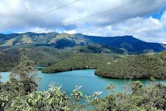
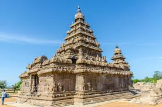
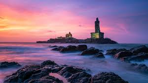

Chennai Metro Rail Expansion – Ongoing metro corridor expansion improving urban transportation.

Tamil Nadu Defence Corridor – Promotes defense manufacturing and industrial growth.
Development of IT parks, smart city projects in Chennai, and renewable energy expansion including wind and solar projects.
Tamil Nadu is a major industrial and automobile hub. It contributes significantly to India’s GDP and has rich cultural heritage.

Meenakshi Temple – A historic Hindu temple in Madurai known for its stunning gopurams and intricate architecture.

Ooty – A popular hill station in the Nilgiri Hills, offering beautiful landscapes, tea gardens, and a cool climate.

Mahabalipuram – Famous for its ancient rock-cut temples, shore temples, and intricate stone carvings dating back to the Pallava dynasty.

Kanyakumari – The southernmost tip of mainland India, celebrated for its spectacular sunrise, sunset views, and the Vivekananda Rock Memorial.